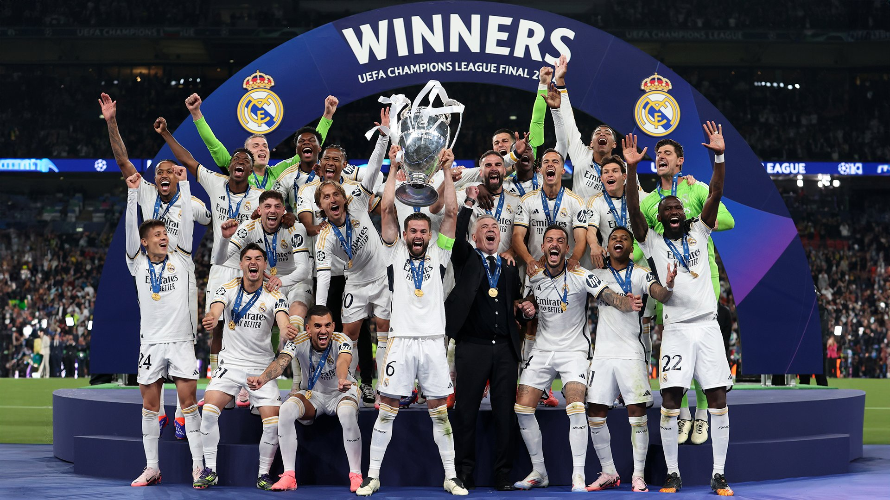
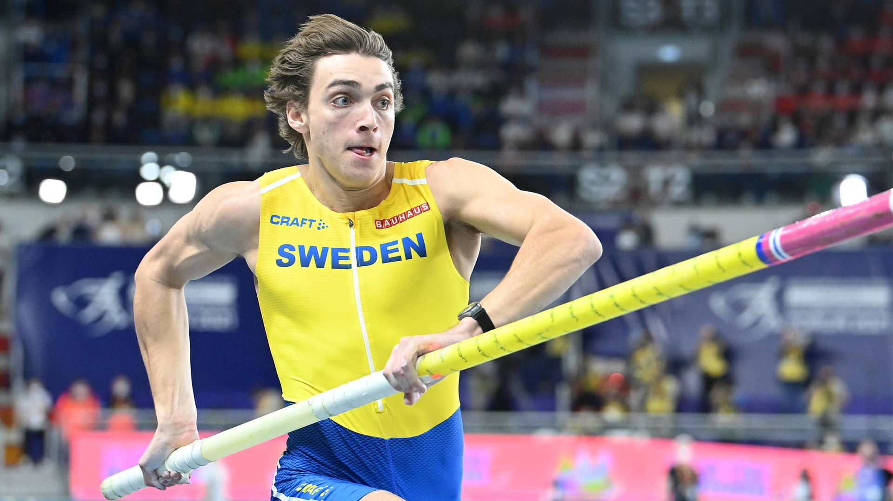

Últimas Noticias
El Real Madrid gana la Champions
Categoría: Fútbol
El Real Madrid se coronó campeón de la UEFA Champions League 2023/24 tras vencer al Borussia Dortmund por 2-0 en la final disputada en el estadio de Wembley el 1 de junio de 2024. Este título marcó su 15ª Copa de Europa, consolidando su posición como el club más exitoso en la historia del torneo.

Juegos Olímpicos 2024: Lo que debes saber
Categoría: Olimpiadas
Los Juegos Olímpicos de París 2024 se llevaron a cabo del 26 de julio al 11 de agosto de 2024, con competencias en 35 sedes repartidas por toda la ciudad y sus alrededores. La Villa Olímpica ofreció a los atletas una experiencia única, con instalaciones modernas y diversas comodidades. La ceremonia de apertura se realizó el 26 de julio, destacando la rica cultura francesa y el espíritu olímpico.

Nueva marca mundial en atletismo
Categoría: Atletismo
En 2024, se establecieron 20 nuevos récords mundiales en atletismo, algunos de los cuales tenían casi 40 años de antigüedad. Atletas como Mondo Duplantis y Sydney McLaughlin-Levrone fueron protagonistas de estos logros, demostrando el continuo avance y la competitividad en el deporte.
